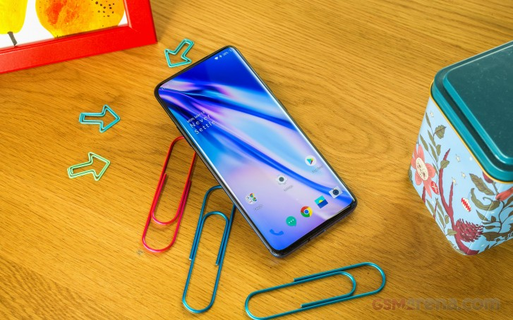
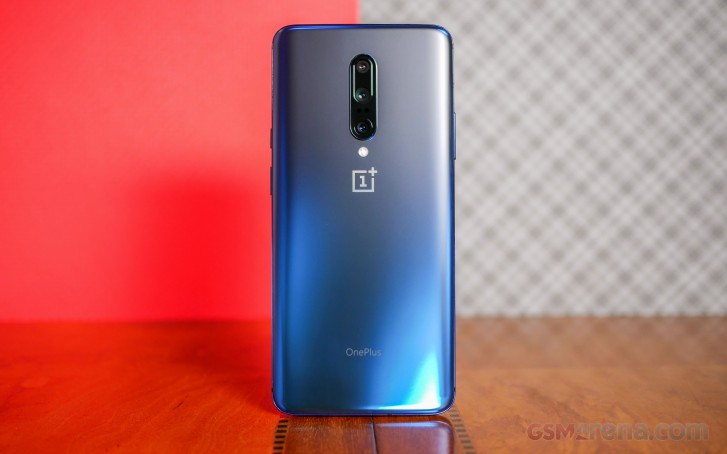

OnePlus has always sort of been a niche enthusiast's smartphone brand which may not be as popular as the majors, but it's carved a pretty nice niche for itself by delivering great smartphone hardware at equally great price points. The company released their first smartphone less than five years ago but today, with the experience gained over the past few iterations, OnePlus is really going after the top dogs in the business with the OnePlus 7 Pro.
The 7 Pro is the first time the company has ever launched a second 'Pro' variant of its flagship and it isn't in vain. It promises a lot on paper and we are already impressed by what this handset has to offer. This phone maxes out at 12GB of RAM and 256GB of UFS 3.0 storage. The triple camera is a nice addition, but image quality will be the deciding factor, and OnePlus' cameras always left room for improvement.
|  |  |
| Front View | Back View |
|---|
OnePlus really scaled up with the 7 Pro. It feels like the company has matured to a fully realized flagship maker and the OnePlus 7 Pro really feels like a phone worth a thousand bucks. Although it's slippery and the thin bezels make more difficult to hold, it feels sturdy and well-built. The bezels themselves are very thin all the way around - the chin is the most prominent, but even that is thinner than the 6T's. The top is now home to the phone's selfie camera. It pops up when you open the camera app (or any other app that fires up the selfie camera) and it's rated for 300,000 uses.
The display itself is gorgeous. It's a hefty-sized display at 6.7-inches (6.46-inches if you account for the rounded corners) and the bezels are very thin. Of course, thanks to the pop-up selfie camera, there's no need for a notch, nor a hole-punch.The OnePlus 7 Pro has a huge potential to reshape the smartphone industry with its 90 Hz display. This refers to the number of times the display refreshes itself per second. For the past several years, all other smartphone makers have been shipping devices with 60Hz displays (except for the odd gaming-centric phone or two) and this meant users could watch content at a max framerate of 60 frames per second.
Oxygen OS adds many useful features and settings on top of stock Android for a well-rounded and well-optimized UX. OnePlus phones are generally quick to get firmware updates and OnePlus launches beta programs for its flagships regularly. In our experience, Oxygen OS feels even snappier than the vanilla Android that comes on the Pixel phones. Out of the box, the phone comes with Android 9 Pie and Oxygen OS version 9.5.2 with minimally pre-installed apps. The only pre-loaded apps that are arguably close to bloatware are the OnePlus Switch app for transferring data from an old device, and a shortcut to the OnePlus Forums.
Qualcomm's Snapdragon 855 is among the top-performing mobile chips on the market. It performs as well as the latest Exynos CPU, just short of Apple's A12 Bionic, and Huawei's latest Kirin 980 is at the bottom of the pack, but still very capable.
OnePlus took a different approach than other manufacturers when it comes to the shooting resolution. There is no way to change the resolution of your photos, and that's okay. Huawei's cameras, for instance, offer an option to take full resolution photos, but the result is softer images with much larger file sizes. This keeps the 48MP camera to be used as intended - by producing a 12MP final image from the available 48MP of the sensor.
| Processor | Qualcomm Snapdragon 855 mobile chip |
|---|---|
| Screen | 6.67" Fluid AMOLED, 90Hz refresh rate, 3120x1440px resolution (516 ppi); |
| Battery | 4,000 mAh; Warp Charge 30W proprietary standard |
| Software | Oxygen OS based on Android 9 Pie |
| Camera |
|
The OnePlus 7 Pro will deliver flagship performance in every department except it won't cost as much as a flagship smartphone by the major brands. There are some trade-offs - but OnePlus believes it's made the right ones keeping its consumers in mind. From where we're standing, they do have a point, and if you are not obsessed with photography, we can wholeheartedly recommend this phone as it has all that it takes to keep you happy day in and day out.
| Pros | Cons |
|---|---|
|
|